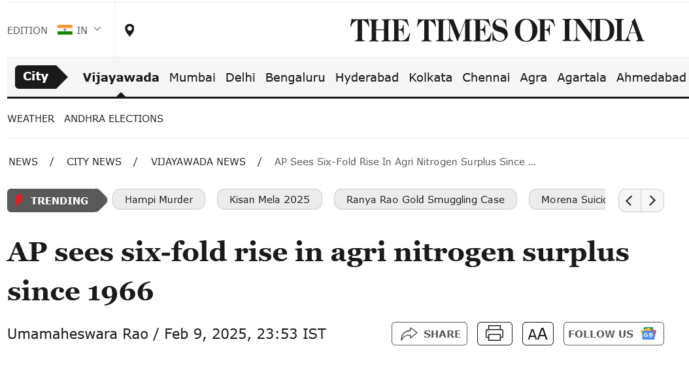
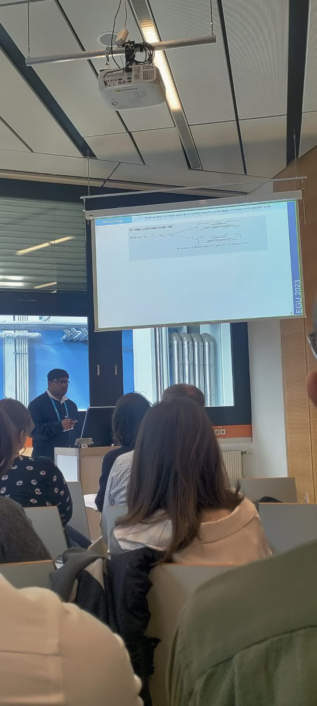

Inspiring Minds Through Science
As a passionate advocate for environmental science and sustainability, I strive to bridge the gap between scientific research and public awareness through engaging outreach. From delivering keynote talks and school lectures to featuring in media and community workshops, my outreach efforts aim to educate, inspire, and empower.

AP sees six-fold rise in agri nitrogen surplus since 1966
Feb 9, 2025 — Based on IITGN & UFZ research insights.

AP stares at water pollution, nitrate contamination: Study
Jan 30, 2024 — Featured insights from IITGN-UFZ collaboration.
Upcoming Engagements

Invited Talk @ JSPM University FDP
April 7–12, 2025

PhD Thesis Defense
April 17, 2025 – IIT Gandhinagar
Conferences & Guest Lectures

Poster Presentation at EGU 2025

Guest Lecture on Sustainability
Outreach & Travel Moments


